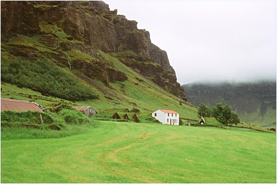
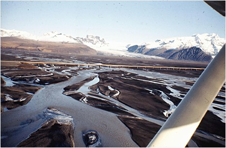
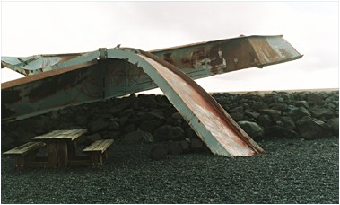
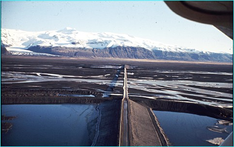
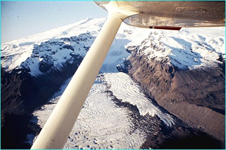
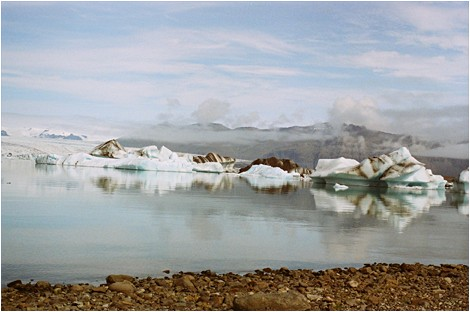

<< retur ÖRÆFI-
ødelandet mellem de store sandurer Jeg sidder i min bil på vej mod landskabet Öræfi, som ligger syd for Vatnajökull og for foden af Öræfajökull, der under sin iskappe skjuler Europas næststørste keglevulkan. Kun Etna på Sicilien er større. Motoren spinder, og jeg glæder mig meget til at gense Skeidarársandur- en 1000 km2 stor sandslette, som er dannet af smeltevandsmasser fra Islands største jøkel-Vatnajökull.
Jeg kører ad hovedvej 1 mod Høfn og har besluttet at gøre holdt i Nupsstadur, som er sidste bygd inden den store sandslette.
Jeg kan se en lille klynge gamle gavlhuse forude med græstørv
som tagbeklædning samt den gamle tørvekirke fra 1600-tallet,
som stadig er i brug i ny og næ. Tunet er nyslået, og her
dufter af hø, men der er ingen mennesker at se. Der ligger et
stort beton-hus af nyere dato med rødt bølgeblikstag.
Huset virker beboet, men bonden sover nok middagssøvn-alt ånder
i fred og ro. Foran huset holder en gammel traktor og en hørive,
et par får bræger i det fjerne, og mod syd knejser fjeldet
med sine grønne, skovbevoksede skråninger, som når
helt op til den lodrette fjeldkant. Farverne er irgrønne i smuk
kontrast til de brune nuancer i selve fjeldet.
 Ud over fjeldkanten falder en elv i flotte gardiner. Elven bruser ned ad fjeldet med sit klare bjergvand, som er byens vandforsyning. Jeg bliver tørstig og går hen og lægger mig ned og drikker af det kolde vand. Hvor i verden kan man ellers gøre det? De gamle landnamsmænd vidste, hvad de gjorde, når de udvalgte sig det sted, hvor de ville bygge og leve. Fjeldfoden var ideel, hvis der lå et vandløb. Her var man beskyttet mod oversvømmelse, der var masser af græs til dyrene, og stedet lå i læ for de kolde nordenvinde om vinteren.
Jeg åbner kirkelågen, som hviner på sine rustne hængsler
og træder ind på den gamle kirkegård, som er omkranset
af stengærder, bygget af lava-blokke og tørv, så
dyrene kan holdes ude. Bag kirken står rønnetræer
og birk og dufter sødt. Længere mod øst troner Islands
højeste lodrette fjeldvæg. Skyerne hænger lavt og
skjuler toppen. Det er fjeldet Lómagnúpur(Lom-klippen),
som er næsten 700 meter højt
Jeg sætter mig ind i kirken, som er meget lille med træbænke
langs siderne og en korvæg med træudskæringer ind
mod alterrummet bagved. Udskæringerne ligner hjerter, der er flettet
ind i hinanden. Se http://www.oplevisland.dk/nupsstadur.html
På alterskuffen står årstallet 1789, og på selve alteret ligger et gammelt brev - måske præstens prædiken fra dengang? Jeg føler mig hensat til tiden omkring den franske revolution, stavnsbåndets ophævelse samt årene lige efter Laki`s store udbrud i 1783-84. Her lugter af ælde og ro. Jeg sætter mig ned på en af løjbænkene og prøver at forestille mig en gudstjeneste her for tohundrede år siden. Stemningen må have været intens. Kampen for livets opretholdelse i disse barske omgivelser har bragt folk tæt på hinanden. Præsten var selv bonde og en af lokalsamfundets lederskikkelser. En anden kendt person var den bonde, der hjalp rejsende over Skeidarársandur med sine rivende smeltevandsstrømme og farlige områder med kviksand.
Den sidste hed Hannes Jónsson, som efter 50 år som rejsefører og postkurer døde her i 1968; kort tid før den nye vej/bro-forbindelse over Skeidarársandur blev en realitet i 1974.
De gamle stifindere har været kendte og agtede i hele Island,
for folk har altid rejst meget - dengang som nu. I sin tid skulle Altinget
helst besøges hvert år, og når man boede på
Østlandet, måtte turen nødvendigvis gå over
den store, farlige sandslette. Man kendte sine heste som sig selv -
ellers ville man ikke turde tvinge dem ud i de rivende vandstrømme
med iskoldt smeltevand. Men man behøvede en lokalkendt fører-
ellers var det for farligt.
Her i Núpsstadur har alle haft brug for hinanden. Mændene
var fårehyrder, og kvinderne tog sig af husholdning og børn.
Slægtsbevidstheden var stor- æresbegreberne høje
- ikke langt fra sagatidens. Danmark var i mange hundrede år kolonimagten,
som ikke altid var lige populær. Mærkeligt at tænke
sig, at amtsmændene her engang var danske.
Jeg hører en vindrossel synge udenfor og går ud af det stille, dunkle rum, hvor lyset falder ind gennem en lille rude bag alteret. Vindroslen smutter ind gennem et hul i gærdet til sine unger- jeg kan høre, at de ivrigt strækker hals og kappes om føden. Lómagnupur Lidt modvilligt forlader jeg Núpsstadurs lune ro og begiver mig af sted mod Skeidarársandur sorte øde.
Snart har jeg Lómagnúpurs lodrette klippeflade til venstre
for mig. For foden ligger resterne af et kæmpeskred, som fandt
sted her en tidlig morgen i juli måned 1789, hvor der var nogle
store jordskælv på Sydlandet. Hovedvejen går tæt
forbi skredets udkant, og jeg glæder mig over, at det ikke skete
just nu. Blokke på størrelse med huse har tordnet ned ad
skråningen i retning mod Nupsstadur, og jorden må have rystet
i sin grundvold. Mon ikke præsten har samlet sin menighed ved
denne lejlighed for derefter at male årstallet 1789 på alteret
i taknemmelighed over, at ingen mistede livet.
Da jeg standser bilen og ser op på Lómagnúpur, kommer
jeg til at tænke på Njáls saga, som fortæller
om en vis Flosi Thórdarson fra gården Svinafell, som jeg
er på vej mod på den anden side af Skeidarársandur.
Denne Flósi var en af de mænd, som brændte Njál
inde på Bergthorshvoll - og han havde en nat drømt, at
han så en kæmpe, klædt i gedeskind og holdende en
jernstav i hånden, træde ud af Lómagnúpur
og nævne dem ved navn, som var ansvarlige for branden på
Bergthorshvóll.
Kæmpen sagde, at hans navn var Járngrimur (Jern-Grimur) og fremsagde følgende vers: ”Hævneren vil komme,
fælde til mulde mange mænd
med hjernerne brudte.
Inde blandt fjeldene buldrer
blåsorte, svungne klinger.-
mer end én skal mødig
mærke sit livsblod sive.” En vis Ketill fra Mørk, som var gift med Njáls datter Thorgerd, tolkede denne drøm på den måde, at alle de, som Járngrimur havde nævnt for ham ved Lómagnupur, var dømt til døden.
Efterfølgende viste det sig, at drømmen gik i opfyldelse. Den store kriger var Kári Sölmundarson, der var gift med Njáls datter Helga. Kári tog hævn over Njál og hans sønners banemænd. Selv mistede Kári sin søn Thord, som også brændte inde på Bergthorshvoll. Skeidarársandur Jeg
er på vej ud over den store, øde sandslette som islændingene
kalder for sandur. Kort tid efter Lómagnupur kommer skiftet,
og jeg kører ud på den første store bro over en
rivende smeltevandsstrøm fra Vatnajökull. Det er Núpsvötn,
som hvirvler afsted under broens spinkle konstruktioner. Dækkene
synger i broens mønstrede metal. Jeg standser for et øjeblik
og kigger ned og bliver svimmel. Hvem kunne nogensinde tænke på
at ride over disse strømme bortset fra i nogle få vintermåneder,
hvor kulden holder smeltevandet bundet i is. Jeg gjorde det ikke! Jeg
synes, at det kræver tilstrækkeligt mod bare at begive sig
ud på denne strækning på over 30 km med broer og grusdæmninger
og en fantastisk udsigt til Skedarárjökull, den længste
udløber fra Vatnajökull. Jeg kører videre over de
lange grusdæmninger og endnu en bro. Ved broerne er der bygget
grusdæmninger vinkelret på vejen, der som fangarme åbner
sig mod Vatnajökull for at tage imod vandmasserne og isskodserne,
hvis der skulle komme et jøkelløb.
Vi danskere kunne tro, at et jøkelløb er et væddeløb
på en jøkel, men i islandske øren har dette ord
en frygtíndgydende klang. Råb: jökulhlaup til en islænding
på denne bro - og han vil sætte sig ind i bilen øjeblikkeligt
- og gasse op. Et jøkelløb finder sted på Skeidarársandur
i ny og næ, når der er vulkansk aktivitet under Vatnajökull.
Så smelter isen, og smeltevandet hober sig op i en gammel kratersø
ved navn Grimsvötn, som ligger inde under ismasserne, og vandet
stiger og stiger for til sidst at løfte hele gletscheren foran,
så smeltevandet kan fosse ud i enorme mængder på sanduren.
Jeg synes, her lugter af svovl, og bliver betænkelig. Måske
skulle jeg vende om til den sikre bastion i Núpsstadur. Svovllugt
er et sikkert tegn på, at et jøklløb er under opsejling.
Jeg stod her sidst i midten af oktober 2004 og lugtede svovl, og bare
14 dage senere kom et mindre jøkelløb, som dog ikke skadede
broer og dæmninger. Det skete til gengæld i 1996, nærmere
betegnet den 5. november, hvor vandmængden i Skeidará,
den største af smeltevandsstrømmene, på få
timer voksede med en faktor 100.
Søen i Grimsvötn tømte hele sit indhold af smeltevand
ud over sanduren i løbet af ganske få dage og rev alt næsten
alt med sig på sin vej mod havet. Grusdæmningerne forsvandt
først - dernæst gik flere af broerne samme vej, og den
største af dem, broen over Skeidará, blev slemt beskadiget,
da store isblokke, på størrelse med huse, sejlede med ud
på sanduren og tørnede ind i bropæle og stålkonstruk-tioner
og brækkede dem eller forvred dem, som var de lavet af strå.
I løbet af ganske få dage løb over 5 km3 vand ud
over sanduren - en vandmængde, der svarer til hele Danmarks forbrug
i over 10 år.
 Jeg kører trøstigt videre mod Skeidará og den smalle bro over den meget brede, rivende strøm og beder en stille bøn om, at bropillerne er tilstrækkeligt solidt funderet, og vulkanerne vil holde sig i ro.Heldigvis er det dog sådan, at det tager sin tid at fylde reservoiret i søen under gletscheren, og der er placeret udstyr til at måle den seismiske aktivitet inde på den sydlige kraterrand af Grimsvötn, der rager op over isen som en nunatak.
Vel over Skeidará øjner jeg en lille parkeringsplads forude
og kører ind her for at studere de plancher, der fortæller
om vulkanudbrudene under isen og de store jøkelløb. En
af de forvredne stål-konstruktioner fra det store jøkelløb
i 1996 står som en flot skulptur og hæver sig over plancherne.
 Jeg
går rundt og nyder udsigten ind mod de store gletschertunger fra
Vatnajökull og Öræfajökull- nemlig Skeidarárjökull,
Skatafellsjökull og Svinafellsjökull - specielt Svinafellsjókull
trækker mit blik med det flotte opsprækkede isfald ned over
klippesiden.
Foran til venstre for mig ligger den tidligere nationalpark Skaftafell
for foden af Skaftafellsjökull. Den er nu indlemmet i Islands størtste
nationalpark - Vatnajökull National Park, som er Europas største
med sine 12.000 km2.
Her
i Skaftafell er der teltplads og cafeteria og muligheder for spændende
vandreture i fjeldet Skaftafellheidi bagved, bl.a. ind til det smukke
vandfald Svartifoss med søjlebasalt i flotte formationer. Vejret
er ofte lunt og solrigt her i regnlæ af de store jøkler.
Øjet drages nu mod øst, hvor Öræfajökull
hæver sig højt over sanduren. Solen skinner på den
isdækkede vulkan, hvis top, Hvannadalshnjúkur, når
op i en højde af 2119 meter. Det er Islands højeste vulkan-
en imponerende selvlysende kæmpe, som slumrer under sit tæppe
af is, men af og til vågner den som det gjorde den i 1362 med
ved et gigantisk plinisk udbrud efter en pause på mere end 500
år. Udbruddets styrke kan sammenlignes med Vesuvs udbrud i år
79 e.Kr., hvor byerne Pompei og Herculanum blev begravet i aske og mudderstrømme.
I
Annalerne står der:
”Öræfajökull
løb ud i havet med så meget grus og sand, at, hvor der
før havde været 30 favnes dyb, fandtes der efter udbruddet
en tør strandbred. En landstrækning på 25 mils længde
blev fuldstændig ødelagt( Litlahérad og Ingolfshøfdahverfi
samt dele af Hornafjördur og Lónshverfi). To kirkesogne
med 40 gårde og præstegårdene Hof og Raudilakr(hvor
dog kirken blev stående) gik til grunde den samme morgen i en
jökelflom. Asken fra vulkanen drev vidt omkring, og mørket
var så sort, at man ikke kunne finde vej midt på dagen.
På det flade land nåede asken til midt på skinnebenet,
og senere blev den af vinden dreven sammen i store dynger, som i højde
sammenlignes med huse. I lang tid kunde man intet samkvem have imellem
landsdelene, da jökelløbene afskar al færdsel mellem
Vatnajökull og havet”
Sveinn Pálsson fortæller et sagn om, at hyrden på
Svinafell, som hed Hallr, og nogle andre, der passede får, hørte
et vældigt knald fra jøklen lige ove rfor dem; derover
blev de meget forskrækkede, men lidt senere kom et andet knald,
meget stærkere end det første:
”da
sagde Hallr, at det neppe var værdt at vente på det tredje,
og løb, alt hvad han kunde, op ad fjeldet ved gården til
en hule(Flosahellir); derpå hørtes det tredje knald, hvorpå
Jøklen væltede frem med forfærdelige brag og fejede
hele bygden nedenfor bort ud på havet tilligemed huse, hjemmemarker,
mennesker og kreaturer; noget blev begravet under grushøjene,
sandet og isdyngerne. En hest skal være undkommen, da den stod
oppe på en høj klippe, som siden kaldes Blessaklettr.”
Det
rige landbrugssamfund, som dengang kaldtes Herad, blev lagt øde
i mange årtier, og man regner med, at mindst 30 gårde blev
ødelagt totalt, så herefter blev området kaldt Öræfi(øde
land) - hvad det hedder den dag i dag. En af de ødelagte gårde
(Grøf) er senere blevet udgravet. Først i 1412 nævnes
egnen igen i kilderne som Öræfi. Omkring 1560 er indbyggerne
her igen velbjergede, og asken er forvitret så meget, at man kan
dyrke den.
I 1727 indtraf katastrofen igen. Det begyndte med jordskælv søndag
den 3/8, medens folk fra området var til gudstjeneste i kirken
i Sandfell. Fra præsten Jón Thorláksson findes en
udmærket øjnevidneskildring til dette vulkanudbrud, som
dog ikke kunne måle sig i styrke med det i 1362.
”Den 4. august mærkede man tidligt om morgenen stærke jordskælv ledsagede af forfærdelige knald.Husene rystede,og alt hvad der stod i dem, blev kastet omkuld; efter kl.9 hørtes tre stærke knald, og kort efter frembrød en vandflom ad kløften Berjagil østenfor Sandfell mellem dette og Hof, der bortskyllede heste og andre kreaturer tilligemed sæteren Kotársel .Derpå strømmede et andet jøkelløb frem vestenfor Sandfell, mellem dette og Svinafell; herved blev også mange får bortskyllede, store enge samt to smågårde tæt ved Sandfell ødelagteÉEn del isstykker fra jøklen blev ført langt ud i havet, andre større stode stille neden for bjergets fod(hullet det efterlod kan stadig ses i dag ved Svartijökull). Dernæst blev luften så formørket af aske, at man ikke kunne skelne nat fra dag og mørket blev alene oplyst af lyn og den ild, som opkom i 5-6 bjergrifter. Således blev det ved i 3 dage. Hele jorden var kulsort af sand og aske, og man kunne ikke uden fare gå under åben himmel formedelst de nedfaldende glødende stene, mod hvilke mange bevæbnede sig på hovedet med spande og kar”
”Præstegården Sandfell tillige med to husmandspladser vare blevne fuldstændig ødelagte ved jøkelløbene med undtagelse af selve bygningerne og nogle pletter af hjemmemarken. Det halve af præstegårdens mandskab opholdt sig ved den tid, jøkelløbet udbrød,i de nylig opbyggede sæterhuse hvor to fuldvoksne fruentimmere tillige med en halvvoksen dreng toge deres tilflugt til taget på det højeste hus, men snart bortrev et vandløb hele huset, og de ulykkelige mennesker omkom i flommen” Efter
udbruddet var alt i den ynkeligste stand. Sekshundrede får og
150 heste var dræbte af nedfaldende vulkanske bomber eller skyllet
til havs. Græsgangene var ødelagte af asken, og beboerne
i Öræfi flygtede til Hornafjördur. Udbruddet varede
til maj 1728. Siden da har vulkanen under Öræfajøklen
slumret sin tornerosesøvn, og mon ikke den fortsætter med
det i mange år endnu.
Öræfi Jeg
sætter mig ind i bilen og kører mod Svinafellsjokull, som
trækker i mig med sit flotte isfald.
En sidevej fører næsten helt ned til gletscherens randzone,
som ser meget anderledes ud, end da jeg var her for 25 år siden.
Gletscherfronten er smeltet meget langt tilbage fra fjeldkanten og den
gamle endemoræne, og jeg kan ikke længere træde direkte
ud på gletscheren, som jeg kunne dengang. Nu er der et lodret
fald på næsten 10 meter ned til en cafélatte-farvet
smeltevandssø langs sideflanken af gletscheren, som er grumset
og stærkt opsprækket og mange steder dækket af sort
lava grus, sten og store blokke. Jeg følger den isskurede fjeldkant,
så langt jeg kan gå og kikker ned på bizarre formationer
i form og farve, hvor nye synsindtryk hele tiden dukker op. Her er der
et troldeansigt og der den enøjede Odin, som ser ud til at have
mistet både visdom og kraft. Jeg forlader forholdsvis hurtigt
stedet. Gletscheren var langt smukkere på afstand, hvor jeg kunne
se isfaldet ned over fjeldsiden. Her tæt på gletscheren
kan man både se og mærke, at dens velmagtsdage er ved at
være talte for denne omgang. Den globale opvarmning er mere, end
gletscheren bryder sig om.
Snart
er jeg ude på vejen igen og kører nu mod Hóf. Jeg
passerer på venstre hånd nedkørslen til gården
Svinafell, hvor en af Njáls banemænd, Flosi, boede. Den
gode Flosi drog dog på valfart til Rom efter sin ugerning og købte
der aflad for en klækkelig sum- og kunne derefter renset vende
tilbage til Svinafell.
Lidt længere fremme står der på et skilt Sandfell.
Her slog Thorgerdur sig ned omkring år 900, forholdsvis kort tid
efter at Ingolfur Arnarson var gået i land på Ingolfshöfdi
- en basaltformation, man kan se som et forbjerg i syd tæt ved
havet. Ingolf tilbragte kun en vinter der - sandsynligvis vinteren 874.
Thorgerdurs mand Asbjørn døde under sejladsen fra Norge,
så Thorgerdur måtte selv tage affære og viste sig
som en handlekraftig kvinde, som sammen med sine sønner byggede
en gård her, hvor gården Sandfell ligger i dag. I Hauksbók,
som er en afskrift af Landmannabók, står der, at en kvinde
måtte tilegne sig så meget land, som hun kunne trække
en to-årig kvie rundt mellem solopgang og solnedgang ved forårsjævndøgn.
Thorgerdur var effektiv og trak sin kvie over en strækning på
35 km fra et fjeld i nærheden af Kviaelven i øst til sydøstkanten
af Skeidarárjökull.
Snart dukker bygden Hof op med sin lille tørvekirke, som dog
er noget større end den i Núpsstadur.
Uden for indgangsportalen til kirken står en sten- ”en mundlaug”-
med to cirkelformede fordybninger, der ligner et gammelt drikketrug
til heste.
Jeg går ind gennem den grønne tremmelåge og ind på
kirkegården, som er særdeles velholdt med rækker af
tuegrave i retningen øst-vest. De står som rektangulære,
græsklædte forhøjninger bygget over kisterne, som
har været svære at grave ned. I stedet har man stablet græstørv
omkring og over dem og plantet røn og hvide kors på gravene.
Et sted vokser en kæmpe røn ud af gravstedet og står
som et kraftfuldt opstandelsessymbol. http://www.oplevisland.dk/hof.html
Kirken i Hof virker forholdsvis nyrestaureret med et gavlfelt af gulmalet
træ i smuk kontrast til vinduesindfatninger og døren ind
til kirken, som er mørkegrønne. Øverst over gavlfeltet
står det hvide kors og troner. Langsiderne er stensætninger
bygget op af flade sten, som er overdækket med græstørv,
som er groet sammen med det saftiggrønne tag, hvor der også
gror mælkebøtter og gule ranunkler. I årene op mod
det store vulkanudbrud i 1362 lå her 6-7 kirker i Öræfi
og ca. 10 kapeller, men udbruddet lagde hele det frugtbare Herad øde.
Jeg kører hen til gården Litlahóf og indkvarterer
mig i et nybygget sommerhus, men har endnu ikke lyst til at gå
til ro. Solen står stadig højt på himlen, og det
er helt stille. Jeg kan kun høre et lille vandfald bag gården
og dobbeltbekkasinens turbulente dyk. Den grønne skråning
op mod vandfaldet er over-strøet med store blokke, der er faldet
ned fra fjeldet i tidens løb. Her går en flok islandske
heste på græs med deres føl, som holder sig tæt
til moderdyrene.
Alt ånder fred og ro, og jeg sætter mig på en blok
ved hestefolden og lytter til elvens brusen, medens tankerne glider
tilbage til året 1974, hvor jeg første gang kom til dette
område i et lille Chesnafly, som jeg havde lejet i Reykjavik sammen
med to venner. Det var dengang billigt at leje fly på Island -
så jeg hyrede fly og pilot for en hel dag og landede her i nærheden
af Litlahóf på en lille flyveplads ved navn Fagurhólmsmyri
tæt ved havet og Ingolfshöfdi. Vi var fløjet hertil
over Hekla og Lakagigar en smuk oktoberdag med strålende sol fra
morgen til aften. Efter en kort pause i Fagurhólmsmyri bad jeg
piloten flyve lavt hen over Hof og derfra ud over Skeidarársandur,
hvor den nye bro lige var blevet åbnet samme år.
 Jeg
sad med åbent vindue og nød det smukke syn, da vi kredsede
over den største af smeltevands-floderne, Skeidará. Vi
fløj også lavt hen over Ingolfshöfdi, som lå
på en sandtange omgivet af vand. Vi kunne se fuglene på
toppen af den gamle vulkan, hvor Ingólfur Arnarson tilbragte
den første vinter på Island. Et oplagt landingssted - og
det eneste mulige for Oræfi. I øvrigt også benyttet
af Kári Sölmundarson, som gik i land her efter en bodsrejse
til Rom. Hans båd forliste ved landgangen, men han reddede livet
og fortsatte til fods i snestorm til Flosis gård Svinafell, hvor
han blev vel modtaget og forsonet med sin ærkefjende og fik tilbudt
vinterlogi samt Flosis niece til ægtefælle, efter at Helga
var død samme vinter, medens han var på langfart.
Jeg bad piloten flyve langs kysten mod øst forbi Kviajökull,
hvor Thorgerdur begyndte sin daglange vandring en tidlig morgen ved
solopgang for over 1100år siden. Vi fortsatte mod Breidamerkurjökull
og fløj lavt hen over smeltevandssøen Jökullsárlon.Der
lå sæler på stranden og solede sig.
 Kviajökull
øverst og smeltevandssøen Jökullsárlón
nederst hvori Breidamerkurjøklen kælver sine isbjerge -
se http://www.oplevisland.dk/jokulsarlon.html
 Et
fascinerende syn og mærkeligt at tænke på, at der
under denne gletscher ligger resterne af en kirke og gården Breida,
hvor Kári Sölmundarson bosatte sig med sin nye kone Hildegunn
og fik tre sønner med hende.
For 1000 år siden var klimaet meget mildere end nu, og isfronten
stod mere ned 10 km fra 1894-morænerne syd for søen. Først
under ”den lille istid” i 1600-1700-tallet skred gletscheren
hen over bebyggelsen fra dengang og nåede sin maksimale udbredelse
i slutningen af 1800-tallet. Nu er gletscheren på vej tilbage
igen og har allerede flyttet sig meget siden 30èrne, hvor hele
sø-lavningen var dækket af is. Måske dukker stederne,
hvor gårdene Breida og nabogården Fjáll lå,
igen frem i dagens lys, hvis tilbagesmeltningen fortsætter med
samme hast.
Jeg
beder nu piloten stige højt op over Hvannadalshnjúkur
- og oppe fra en højde af ca. 3 km kigger jeg ned på kraterkanten
af den gamle aggressive vulkan. Bebyggelsen i Hof er bare små
prikker under mig, og jeg kan ikke lade være med at beundre de
mennesker, som har levet her slægt efter slægt i over 1000
år samtidig med, at de var fuldt bevidste om de farer, der truede
i form af vulkanerne under isen, smeltevandsstrømmene, havet
mod syd, samt isolationen mellem de store øde sandurer mod vest
og øst. Fra fugleperspektiv kan jeg forstå, hvorfor gårdene
ligger i klynger og ikke isoleret - hver for sig. Man har haft brug
for hinanden i en fælles kamp for at overleve.
Copyright Morten Stender << retur | |